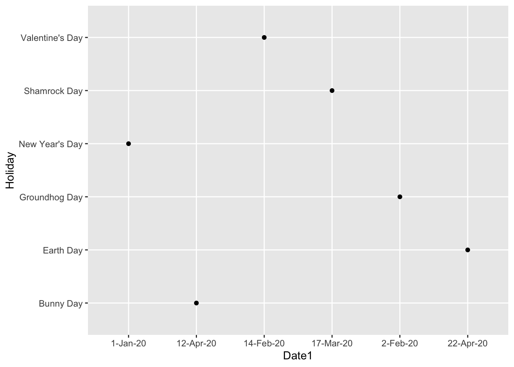
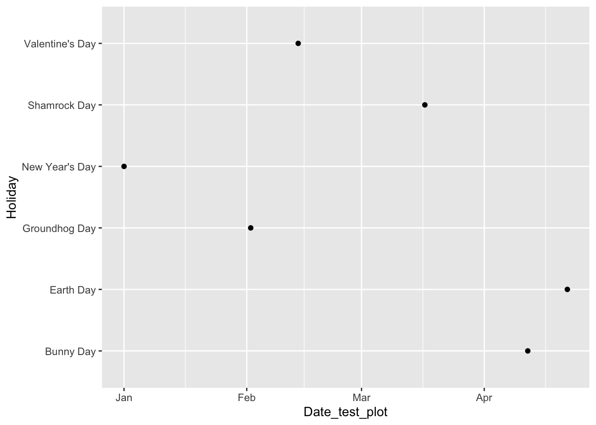
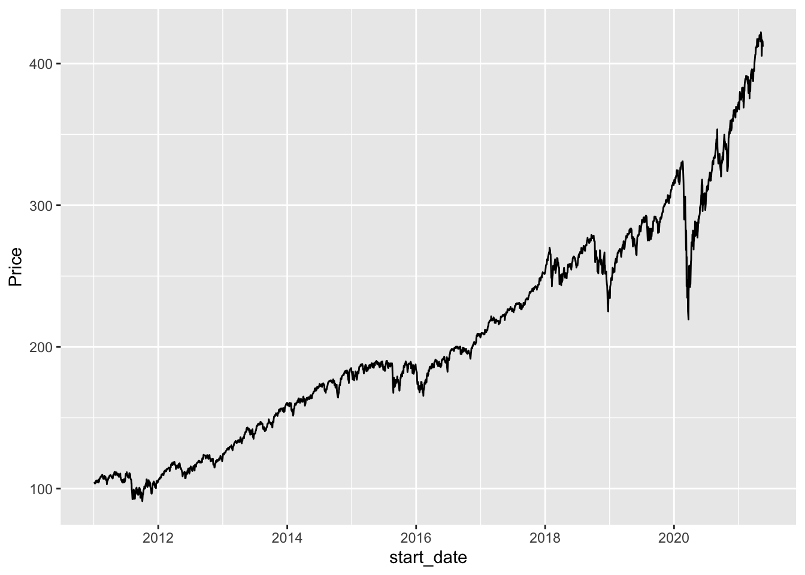
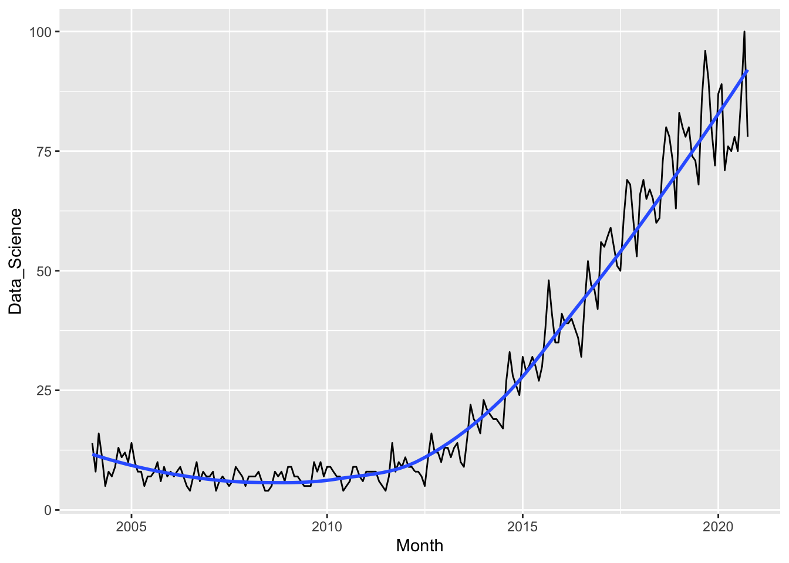
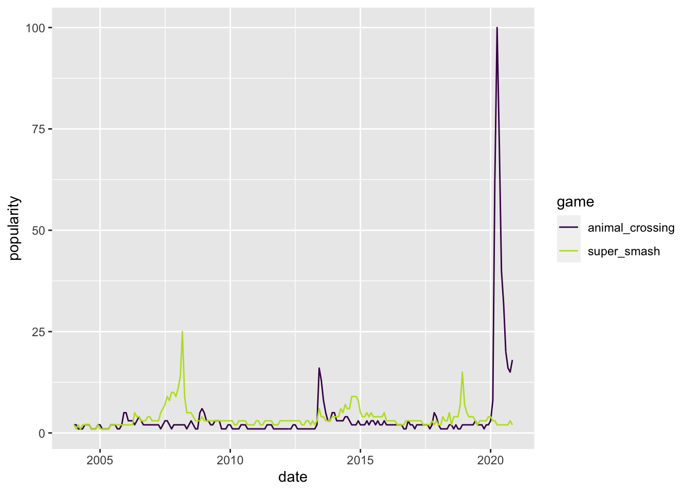
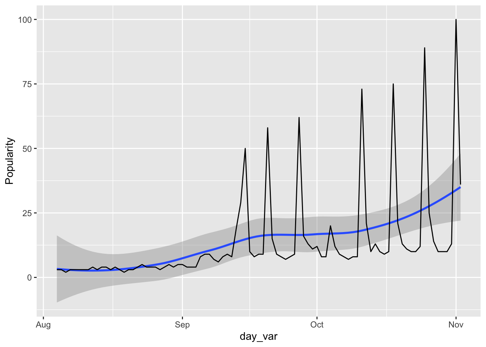

Chapter 12 Dates with lubridate
Goals:
- use
lubridatefunctions to convert a character variable to a<date>variable. - use
lubridatefunctions to extract useful information from a<date>variable, including the year, month, day of the week, and day of the year.
12.1 Converting Variables to <date>
The lubridate package is built to easily work with Date objects and DateTime objects. R does not actually have a class that stores Time objects (unless you install a separate package). Dates tend to be much more common than Times, so, we will primarily focus on Dates, but most functions we will see have easy extensions to Times.
To begin, install the lubridate package, and load the package with library(). The today() function prints today’s date while now() prints today’s date and time. These can sometimes be useful in other contexts, but we will just run the code to see how R stores dates and date-times.
library(tidyverse)
library(lubridate)
today()## [1] "2021-06-24"now()## [1] "2021-06-24 10:38:43 EDT"This first section will deal with how to convert a variable in R to be a Date. We will use a data set that has the holidays of Animal Crossing from January to April. The columns in this data set are:
Holiday, the name of the holiday and- various other columns with different date formats
Read in the data set with
holiday_df <- read_csv("data/animal_crossing_holidays.csv")
holiday_df## # A tibble: 6 x 10
## Holiday Date1 Date2 Date3 Date4 Date5 Month Year Day Month2
## <chr> <chr> <chr> <chr> <chr> <chr> <dbl> <dbl> <dbl> <chr>
## 1 New Year's… 1-Jan-… Jan-1-2… 1/1/20 1/1/20 2020 0… 1 2020 1 January
## 2 Groundhog … 2-Feb-… Feb-2-2… 2/2/20 2/2/20 2020 0… 2 2020 2 Februa…
## 3 Valentine'… 14-Feb… Feb-14-… 2/14/… 2020-14… 2020 0… 2 2020 14 Februa…
## 4 Shamrock D… 17-Mar… Mar-17-… 3/17/… 2020-17… 2020 0… 3 2020 17 March
## 5 Bunny Day 12-Apr… Apr-12-… 4/12/… 12/4/20 2020 0… 4 2020 12 April
## 6 Earth Day 22-Apr… Apr-22-… 4/22/… 2020-22… 2020 0… 4 2020 22 AprilWhich columns were specified as Dates? In this example, none of the columns have the <date> specification: all of the date columns are read in as character variables.
12.1.1 From <chr> to <date>
We will use the dmy() series of functions in lubridate to convert character variables to dates. We will typically pair this new function with a mutate() statement: much like the forcats functions, we are almost always creating a new variable.
There are a series of dmy()-type variables, each corresponding to a different Day-Month-Year order.
dmy()is used to parse a date from a character vector that has the day first, month second, and year last.ymd()is used to parse a date that has year first, month second, and date lastydm()is used to parse a date that has year first, day second, and month last,….
and dym(), mdy(), and myd() work similarly. lubridate is usually “smart” and picks up dates in all kinds of different formats (e.g. it can pick up specifying October as the month and Oct as the month and 10 as the month).
Let’s try it out on Date1 and Date2:
holiday_df %>% mutate(Date_test = dmy(Date1)) %>%
select(Date_test, everything())## # A tibble: 6 x 11
## Date_test Holiday Date1 Date2 Date3 Date4 Date5 Month Year Day Month2
## <date> <chr> <chr> <chr> <chr> <chr> <chr> <dbl> <dbl> <dbl> <chr>
## 1 2020-01-01 New Year… 1-Jan… Jan-1… 1/1/20 1/1/… 2020… 1 2020 1 Janua…
## 2 2020-02-02 Groundho… 2-Feb… Feb-2… 2/2/20 2/2/… 2020… 2 2020 2 Febru…
## 3 2020-02-14 Valentin… 14-Fe… Feb-1… 2/14/… 2020… 2020… 2 2020 14 Febru…
## 4 2020-03-17 Shamrock… 17-Ma… Mar-1… 3/17/… 2020… 2020… 3 2020 17 March
## 5 2020-04-12 Bunny Day 12-Ap… Apr-1… 4/12/… 12/4… 2020… 4 2020 12 April
## 6 2020-04-22 Earth Day 22-Ap… Apr-2… 4/22/… 2020… 2020… 4 2020 22 Aprilholiday_df %>% mutate(Date_test = mdy(Date2)) %>%
select(Date_test, everything())## # A tibble: 6 x 11
## Date_test Holiday Date1 Date2 Date3 Date4 Date5 Month Year Day Month2
## <date> <chr> <chr> <chr> <chr> <chr> <chr> <dbl> <dbl> <dbl> <chr>
## 1 2020-01-01 New Year… 1-Jan… Jan-1… 1/1/20 1/1/… 2020… 1 2020 1 Janua…
## 2 2020-02-02 Groundho… 2-Feb… Feb-2… 2/2/20 2/2/… 2020… 2 2020 2 Febru…
## 3 2020-02-14 Valentin… 14-Fe… Feb-1… 2/14/… 2020… 2020… 2 2020 14 Febru…
## 4 2020-03-17 Shamrock… 17-Ma… Mar-1… 3/17/… 2020… 2020… 3 2020 17 March
## 5 2020-04-12 Bunny Day 12-Ap… Apr-1… 4/12/… 12/4… 2020… 4 2020 12 April
## 6 2020-04-22 Earth Day 22-Ap… Apr-2… 4/22/… 2020… 2020… 4 2020 22 AprilA Reminder: Why do <date> objects even matter? Compare the following two plots: one made where the date is in <chr> form and the other where date is in its appropriate <date> form.
ggplot(data = holiday_df, aes(x = Date1, y = Holiday)) +
geom_point()
holiday_df <- holiday_df %>% mutate(Date_test_plot = dmy(Date1)) %>%
select(Date_test_plot, everything())
ggplot(data = holiday_df, aes(x = Date_test_plot, y = Holiday)) +
geom_point()
In which plot does the ordering on the x-axis make more sense?
12.1.2 Making a <date> variable from Date Components
Another way to create a Date object is to assemble it with make_date() from a month, day, and year components, each stored in a separate column:
holiday_df %>% mutate(Date_test2 = make_date(year = Year,
month = Month,
day = Day)) %>%
select(Date_test2, everything())## # A tibble: 6 x 12
## Date_test2 Date_test_plot Holiday Date1 Date2 Date3 Date4 Date5 Month Year
## <date> <date> <chr> <chr> <chr> <chr> <chr> <chr> <dbl> <dbl>
## 1 2020-01-01 2020-01-01 New Yea… 1-Jan… Jan-1… 1/1/… 1/1/… 2020… 1 2020
## 2 2020-02-02 2020-02-02 Groundh… 2-Feb… Feb-2… 2/2/… 2/2/… 2020… 2 2020
## 3 2020-02-14 2020-02-14 Valenti… 14-Fe… Feb-1… 2/14… 2020… 2020… 2 2020
## 4 2020-03-17 2020-03-17 Shamroc… 17-Ma… Mar-1… 3/17… 2020… 2020… 3 2020
## 5 2020-04-12 2020-04-12 Bunny D… 12-Ap… Apr-1… 4/12… 12/4… 2020… 4 2020
## 6 2020-04-22 2020-04-22 Earth D… 22-Ap… Apr-2… 4/22… 2020… 2020… 4 2020
## # … with 2 more variables: Day <dbl>, Month2 <chr>But, when Month is stored as a character (e.g. February) instead of a number (e.g. 2), problems arise with the make_date() function:
holiday_df %>% mutate(Date_test2 = make_date(year = Year,
month = Month2,
day = Day)) %>%
select(Date_test2, everything())## Warning in make_date(year = Year, month = Month2, day = Day): NAs introduced by
## coercion## # A tibble: 6 x 12
## Date_test2 Date_test_plot Holiday Date1 Date2 Date3 Date4 Date5 Month Year
## <date> <date> <chr> <chr> <chr> <chr> <chr> <chr> <dbl> <dbl>
## 1 NA 2020-01-01 New Yea… 1-Jan… Jan-1… 1/1/… 1/1/… 2020… 1 2020
## 2 NA 2020-02-02 Groundh… 2-Feb… Feb-2… 2/2/… 2/2/… 2020… 2 2020
## 3 NA 2020-02-14 Valenti… 14-Fe… Feb-1… 2/14… 2020… 2020… 2 2020
## 4 NA 2020-03-17 Shamroc… 17-Ma… Mar-1… 3/17… 2020… 2020… 3 2020
## 5 NA 2020-04-12 Bunny D… 12-Ap… Apr-1… 4/12… 12/4… 2020… 4 2020
## 6 NA 2020-04-22 Earth D… 22-Ap… Apr-2… 4/22… 2020… 2020… 4 2020
## # … with 2 more variables: Day <dbl>, Month2 <chr>So the make_date() function requires a specific format for the year, month, and day columns. It may take a little pre-processing to put a particular data set in that format.
12.1.3 Exercises
Exercises marked with an * indicate that the exercise has a solution at the end of the chapter at 12.4.
- * What’s the issue with trying to convert
Date4to a<date>form? You may want to investigateDate4further to answer this question.
holiday_df %>% mutate(Date_test = ymd(Date4)) %>%
select(Date_test, everything())## Warning: 3 failed to parse.## # A tibble: 6 x 12
## Date_test Date_test_plot Holiday Date1 Date2 Date3 Date4 Date5 Month Year
## <date> <date> <chr> <chr> <chr> <chr> <chr> <chr> <dbl> <dbl>
## 1 2001-01-20 2020-01-01 New Yea… 1-Jan… Jan-1… 1/1/… 1/1/… 2020… 1 2020
## 2 2002-02-20 2020-02-02 Groundh… 2-Feb… Feb-2… 2/2/… 2/2/… 2020… 2 2020
## 3 NA 2020-02-14 Valenti… 14-Fe… Feb-1… 2/14… 2020… 2020… 2 2020
## 4 NA 2020-03-17 Shamroc… 17-Ma… Mar-1… 3/17… 2020… 2020… 3 2020
## 5 2012-04-20 2020-04-12 Bunny D… 12-Ap… Apr-1… 4/12… 12/4… 2020… 4 2020
## 6 NA 2020-04-22 Earth D… 22-Ap… Apr-2… 4/22… 2020… 2020… 4 2020
## # … with 2 more variables: Day <dbl>, Month2 <chr>- * Practice converting
Date3andDate5to<date>variables withlubridatefunctions.
12.2 Functions for <date> Variables
Once an object is in the <date> format, there are some special functions in lubridate that can be used on that date variable. To investigate some of these functions, we will pull stock market data from Yahoo using the quantmod package. Install the package, and run the following code, which gets stock market price data on Apple, Nintendo, Chipotle, and the S & P 500 Index from 2011 to now. Note that you have the ability to understand all of the code below, but we will skip over this code for now to focus more on the new information in this section (information about date functions).
## install.packages("quantmod")
library(quantmod)
start <- ymd("2011-01-01")
end <- ymd("2021-5-19")
getSymbols(c("AAPL", "NTDOY", "CMG", "SPY"), src = "yahoo",
from = start, to = end)## [1] "AAPL" "NTDOY" "CMG" "SPY"date_tib <- as_tibble(index(AAPL)) %>%
rename(start_date = value)
app_tib <- as_tibble(AAPL)
nint_tib <- as_tibble(NTDOY)
chip_tib <- as_tibble(CMG)
spy_tib <- as_tibble(SPY)
all_stocks <- bind_cols(date_tib, app_tib, nint_tib, chip_tib, spy_tib)
stocks_long <- all_stocks %>%
select(start_date, AAPL.Adjusted, NTDOY.Adjusted,
CMG.Adjusted, SPY.Adjusted) %>%
pivot_longer(2:5, names_to = "Stock_Type", values_to = "Price") %>%
mutate(Stock_Type = fct_recode(Stock_Type,
Apple = "AAPL.Adjusted",
Nintendo = "NTDOY.Adjusted",
Chipotle = "CMG.Adjusted",
`S & P 500` = "SPY.Adjusted"
))
tail(stocks_long)## # A tibble: 6 x 3
## start_date Stock_Type Price
## <date> <fct> <dbl>
## 1 2021-05-17 Chipotle 1332.
## 2 2021-05-17 S & P 500 416.
## 3 2021-05-18 Apple 125.
## 4 2021-05-18 Nintendo 70.4
## 5 2021-05-18 Chipotle 1325.
## 6 2021-05-18 S & P 500 412.You’ll have a chance in the Exercises to choose your own stocks to investigate. For now, I’ve made a data set with three variables:
start_date, the opening date for the stock marketStock_Type, a factor with 4 levels:Apple,Nintendo,Chipotle, andS & P 500Price, the price of the stock?
First, let’s make a line plot that shows how the S & P 500 has changed over time:
stocks_sp <- stocks_long %>% filter(Stock_Type == "S & P 500")
ggplot(data = stocks_sp, aes(x = start_date, y = Price)) +
geom_line()
But, there’s other information that we can get from the start_date variable. We might be interested in things like day of the week, monthly trends, or yearly trends. To extract variables like “weekday” and “month” from a <date> variable, there are a series of functions that are fairly straightforward to use. We will discuss the year() month(), mday(), yday(), and wday() functions.
12.2.1 year(), month(), and mday()
The functions year(), month(), and mday() can grab the year, month, and day of the month, respectively, from a <date> variable. Like the forcats functions, these will almost always be paired with a mutate() statement because they will create a new variable:
stocks_long %>% mutate(year_stock = year(start_date))
stocks_long %>% mutate(month_stock = month(start_date))
stocks_long %>% mutate(day_stock = mday(start_date))12.2.2 yday() and wday()
The yday() function grabs the day of the year from a <date> object. For example,
test <- mdy("November 4, 2020")
yday(test)## [1] 309returns 309, indicating that November 4th is the 309th day of the year 2020. Using this function in a mutate() statement creates a new variable that has yday for each observation:
stocks_long %>% mutate(day_in_year = yday(start_date))## # A tibble: 10,444 x 4
## start_date Stock_Type Price day_in_year
## <date> <fct> <dbl> <dbl>
## 1 2011-01-03 Apple 10.1 3
## 2 2011-01-03 Nintendo 36.7 3
## 3 2011-01-03 Chipotle 224. 3
## 4 2011-01-03 S & P 500 104. 3
## 5 2011-01-04 Apple 10.2 4
## 6 2011-01-04 Nintendo 35.5 4
## 7 2011-01-04 Chipotle 222. 4
## 8 2011-01-04 S & P 500 104. 4
## 9 2011-01-05 Apple 10.3 5
## 10 2011-01-05 Nintendo 34.6 5
## # … with 10,434 more rowsFinally, the function wday() grabs the day of the week from a <date>. By default, wday() puts the day of the week as a numeric, but I find this confusing, as I can’t ever remember whether a 1 means Sunday or a 1 means Monday. Adding, label = TRUE creates the weekday variable as Sunday, Monday, Tuesday, etc.:
stocks_long %>% mutate(day_of_week = wday(start_date))
stocks_long %>% mutate(day_of_week = wday(start_date,
label = TRUE, abbr = FALSE))Possible uses for these functions are:
you want to look at differences between years (with
year())you want to look at differences between months (with
month())you want to look at differences between days of the week (with
wday())you want to see whether there are yearly trends within years (with
yday())
Note: Working with times is extremely similar to working with dates. Instead of ymd(), mdy(), etc., you tack on a few extra letters to specify the order that the hour, minute, and seconds appear in the variable: ymd_hms() converts a character vector that has the order year, month, day, hour, minute, second to a <datetime>.
Additionally, the functions hour(), minute(), and second() grab the hour, minute, and second from a <datetime> variable.
Note on Complications: Things can get complicated, especially if you start to consider things like time duration. The reason is that our time system is inherently confusing. Consider how the following might affect an analysis involving time duration:
- time zones
- leap years (not all years have the same number of days)
- differing number of days in a given month
- daylight saving time (not all days have the same number of hours)
12.2.3 Exercises
Exercises marked with an * indicate that the exercise has a solution at the end of the chapter at 12.4.
- The
month()function gives the numbers corresponding to each month by default. Type?monthand figure out which argument you would need to change to get the names (January, February, etc.) instead of the month numbers. What about the abbreviations (Jan, Feb, etc.) of each month instead of the month numbers? Try making the changes in themutate()statement below.
stocks_long %>% mutate(month_stock = month(start_date))12.3 Chapter Exercises
Exercises marked with an * indicate that the exercise has a solution at the end of the chapter at 12.4.
The truncated argument to ymd(), dmy(), mdy(), etc. will allow R to parse dates that aren’t actually complete. For example,
library(lubridate)
ymd("2019", truncated = 2)## [1] "2019-01-01"parses 2019 to be January 1, 2019 when the month and day are missing. The 2 means that the last two parts of the date (in this case, month and day) are allowed to be missing. Similarly,
dmy("19-10", truncated = 1)## [1] "0000-10-19"truncates the year (which is given as 0000). The truncate function is usually most useful in the context of the first example with a truncated month and/or day.
Examine the ds_google.csv, which contains
Month, the year and month from 2004 to nowData_Science, the relative popularity of data science (Google keeps how it calculates “popularity” as somewhat of a mystery but it is likely based off of the number of times people search for the term “Data Science”)
library(tidyverse)
library(lubridate)
ds_df <- read_csv("data/ds_google.csv")
ds_df## # A tibble: 202 x 2
## Month Data_Science
## <chr> <dbl>
## 1 2004-01 14
## 2 2004-02 8
## 3 2004-03 16
## 4 2004-04 11
## 5 2004-05 5
## 6 2004-06 8
## 7 2004-07 7
## 8 2004-08 9
## 9 2004-09 13
## 10 2004-10 11
## # … with 192 more rows* Use a
lubridatefunction with thetruncatedoption to convert theMonthvariable to be in the<date>format.* Make a plot of the popularity of Data Science through Time. Add a smoother to your plot. What patterns do you notice?
The data was obtained from Google Trends: Google Trends. Google Trends is incredibly cool to explore, even without R.
- * On Google Trends, Enter in a search term, and change the Time dropdown menu to be 2004-present. Then, enter in a second search term that you want to compare. You can also change the country if you want to (or, you can keep the country as United States).
My search terms will be “super smash” and “animal crossing,” but yours should be something that interests you!
In the top-right window of the graph, you should click the down arrow to download the data set. Delete the first two rows of your data set (either in Excel or R), read in the data set, and change the date variable so that it’s in a Date format.
* Make a plot of your Popularity variables through time. Hint: Does the data set need to be tidied at all first?
* Using your data set that explored a variable or two from 2004 through now, make a table of the average popularity for each year. Hint: You’ll need a lubridate function to extract the year variable from the date object.
* Clear your search and now enter a search term that you’d like to investigate for the past 90 days. Mine will be “pittsburgh steelers” but, again, yours should be something that interests you.
Again, click the download button again and read in the data to R. Convert the date variable to be in <date> format.
* Make a plot of your popularity variable through time, adding a smoother.
Using your data set that explored a variable from the past 90 days, construct a table that compares the average popularity on each day of the week (Monday through Saturday).
Examine the
ds_dfdata set again, the data set on data science in Google Trends, and suppose that you have an observation for each day of every year (not just one observation per month). You want to look at whether data science is more popular on certain days of the week. Explain why the following strategy wouldn’t really work that well.
- create a weekday variable with
wday() - use
summarise()andgroup_by()to find the average popularity for each day of the week
- Use the code in the tutorial section on the Stocks data to get a data frame on stock prices for a couple of different stocks that interest you. The start and end date that you use are completely up to you.
Explore the stock data that you chose, constructing a line plot of the price through time, as well as any graphs or summaries that show interesting patterns across years, months, days, days of the week, etc.
- Use the
lag()function to create a new variable that is the previous day’s stock price. Can you predict the current stock price based on the previous day’s stock price accurately? Why or why not? Use either graphical or numerical evidence.
12.4 Exercise Solutions
12.4.1 Converting Variables to <date> S
- * What’s the issue with trying to convert
Date4to a<date>form?
holiday_df %>% mutate(Date_test = ymd(Date4)) %>%
select(Date_test, everything())## Warning: 3 failed to parse.## # A tibble: 6 x 12
## Date_test Date_test_plot Holiday Date1 Date2 Date3 Date4 Date5 Month Year
## <date> <date> <chr> <chr> <chr> <chr> <chr> <chr> <dbl> <dbl>
## 1 2001-01-20 2020-01-01 New Yea… 1-Jan… Jan-1… 1/1/… 1/1/… 2020… 1 2020
## 2 2002-02-20 2020-02-02 Groundh… 2-Feb… Feb-2… 2/2/… 2/2/… 2020… 2 2020
## 3 NA 2020-02-14 Valenti… 14-Fe… Feb-1… 2/14… 2020… 2020… 2 2020
## 4 NA 2020-03-17 Shamroc… 17-Ma… Mar-1… 3/17… 2020… 2020… 3 2020
## 5 2012-04-20 2020-04-12 Bunny D… 12-Ap… Apr-1… 4/12… 12/4… 2020… 4 2020
## 6 NA 2020-04-22 Earth D… 22-Ap… Apr-2… 4/22… 2020… 2020… 4 2020
## # … with 2 more variables: Day <dbl>, Month2 <chr>## Date4 has two __different__ formats,
## which creates problems for `lubridate` functions- * Practice converting
Date3andDate5to date objects withlubridatefunctions.
holiday_df %>% mutate(Date_test = mdy(Date3)) %>%
select(Date_test, everything())## # A tibble: 6 x 12
## Date_test Date_test_plot Holiday Date1 Date2 Date3 Date4 Date5 Month Year
## <date> <date> <chr> <chr> <chr> <chr> <chr> <chr> <dbl> <dbl>
## 1 2020-01-01 2020-01-01 New Yea… 1-Jan… Jan-1… 1/1/… 1/1/… 2020… 1 2020
## 2 2020-02-02 2020-02-02 Groundh… 2-Feb… Feb-2… 2/2/… 2/2/… 2020… 2 2020
## 3 2020-02-14 2020-02-14 Valenti… 14-Fe… Feb-1… 2/14… 2020… 2020… 2 2020
## 4 2020-03-17 2020-03-17 Shamroc… 17-Ma… Mar-1… 3/17… 2020… 2020… 3 2020
## 5 2020-04-12 2020-04-12 Bunny D… 12-Ap… Apr-1… 4/12… 12/4… 2020… 4 2020
## 6 2020-04-22 2020-04-22 Earth D… 22-Ap… Apr-2… 4/22… 2020… 2020… 4 2020
## # … with 2 more variables: Day <dbl>, Month2 <chr>holiday_df %>% mutate(Date_test = ymd(Date5)) %>%
select(Date_test, everything())## # A tibble: 6 x 12
## Date_test Date_test_plot Holiday Date1 Date2 Date3 Date4 Date5 Month Year
## <date> <date> <chr> <chr> <chr> <chr> <chr> <chr> <dbl> <dbl>
## 1 2020-01-01 2020-01-01 New Yea… 1-Jan… Jan-1… 1/1/… 1/1/… 2020… 1 2020
## 2 2020-02-02 2020-02-02 Groundh… 2-Feb… Feb-2… 2/2/… 2/2/… 2020… 2 2020
## 3 2020-02-14 2020-02-14 Valenti… 14-Fe… Feb-1… 2/14… 2020… 2020… 2 2020
## 4 2020-03-17 2020-03-17 Shamroc… 17-Ma… Mar-1… 3/17… 2020… 2020… 3 2020
## 5 2020-04-12 2020-04-12 Bunny D… 12-Ap… Apr-1… 4/12… 12/4… 2020… 4 2020
## 6 2020-04-22 2020-04-22 Earth D… 22-Ap… Apr-2… 4/22… 2020… 2020… 4 2020
## # … with 2 more variables: Day <dbl>, Month2 <chr>12.4.2 Functions for <date> Variables S
12.4.3 Chapter Exercises S
- * Use a
lubridatefunction with thetruncatedoption to convert theMonthvariable to be in the<date>format.
ds_df <- ds_df %>% mutate(Month = ymd(Month, truncated = 1))
ds_df- * Make a plot of the popularity of Data Science through Time. Add a smoother to your plot. What patterns do you notice?
ggplot(data = ds_df, aes(x = Month, y = Data_Science)) +
geom_line() +
geom_smooth(se = FALSE)## `geom_smooth()` using method = 'loess' and formula 'y ~ x'
## it's like super popular!!!!- * On Google Trends, Enter in a search term, and change the Time dropdown menu to be 2004-present. Then, enter in a second search term that you want to compare. You can also change the country if you want to (or, you can keep the country as United States).
My search terms will be “super smash” and “animal crossing,” but yours should be something that interests you!
In the top-right window of the graph, you should click the down arrow to download the data set. Delete the first two rows of your data set (either in Excel or R), read in the data set, and change the date variable so that it’s in a Date format.
videogame_df <- read_csv("data/smash_animal_crossing.csv")## Parsed with column specification:
## cols(
## Month = col_character(),
## super_smash = col_double(),
## animal_crossing = col_double()
## )videogame_df <- videogame_df %>% mutate(date = ymd(Month, truncated = 1))- * Make a plot of your Popularity variables through time. Hint: Does the data set need to be tidied at all first?
videogame_long <- videogame_df %>%
pivot_longer(cols = c("super_smash", "animal_crossing"),
names_to = "game",
values_to = "popularity")
ggplot(data = videogame_long, aes(x = date,
y = popularity,
colour = game)) +
geom_line() +
scale_colour_viridis_d(begin = 0, end = 0.9)
* Using your data set that explored a variable or two from 2004 through now, make a table of the average popularity for each year. Hint: You’ll need a lubridate function to extract the year variable from the date object.
* Clear your search and now enter a search term that you’d like to investigate for the past 90 days. Mine will be “pittsburgh steelers” but, again, yours should be something that interests you.
Again, click the download button again and read in the data to R. Convert the date variable to be in <date> format.
steelers_df <- read_csv("data/steelers.csv")## Parsed with column specification:
## cols(
## Day = col_character(),
## Steelers = col_double()
## )steelers_df <- steelers_df %>% mutate(day_var = mdy(Day))- * Make a plot of your popularity variable through time, adding a smoother.
ggplot(data = steelers_df, aes(x = day_var, y = Steelers)) +
geom_smooth() +
geom_line() +
labs(y = "Popularity")## `geom_smooth()` using method = 'loess' and formula 'y ~ x'